Nessa aula vamos aprender a usar CSS em nossas páginas HTML para deixá-las mais bonitas visualmente.
Você já percebeu como as páginas web de hoje em dia são coloridas e tem vários efeitos visuais para chamar a atenção do usuário?
Todos os efeitos e cores de uma página web são feitos utilizando o CSS e em alguns casos também é usado JavaScript. A partir de agora vamos aprender o que é e como usar o CSS em nossos sites.
A sigla CSS significa Cascading Style Sheet, que traduzido para o português denomina-se “Folha de estilo em cascata”.
Usamos CSS na formatação das páginas web, com ele conseguimos descrever como os elementos HTML devem ser exibidos na tela, qual vai ser sua cor, tamanho, em que posição vai ficar, entre outras opções.
O CSS traz muita praticidade ao desenvolvimento de sites, pois o mesmo arquivo CSS pode ser utilizado em diferentes páginas HTML, evitando assim o trabalho de reescrevê-lo.
Os comando CSS são normalmente escritos em um arquivo externo ao arquivo HTML, com isso você pode mudar o estilo de todo o site apenas alterando um arquivo CSS.
Todo arquivo CSS deve ser salvo com a extensão “.css”, assim como os arquivos HTML são salvos com a extensão “.html”.
Também é possível escrever códigos CSS dentro do arquivo HTML utilizando a tag style, dentro dessa tag podemos escrever os códigos CSS aplicados na página. No entanto, quando há muito código CSS ou quando esse código deve ser compartilhado entre diferentes páginas é indicado escrevê-lo em um arquivo separado.
Os códigos escritos em CSS são compostos por um seletor e um bloco de declarações.
O seletor é onde indicamos quais componentes HTML vão receber os estilos, e no bloco de declarações informamos as características que desejamos alterar no componente informado.
O bloco de declaração pode conter várias declarações separadas por ponto e vírgula. Cada declaração é formada pelo nome da propriedade CSS e o valor que ela irá receber.
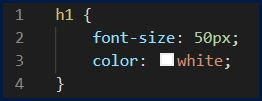
No exemplo acima, temos na linha 1 o seletor indicando que os estilos CSS serão aplicados ao elemento h1 do HTML, relembrando que o elemento h1 representa um título.
Nas linhas 2 e 3 temos as declarações CSS alterando o tamanho da fonte e a cor do texto respectivamente, e na linha 4 temos o fechamento do bloco de declarações CSS.
Nós temos três formas diferentes de indicar os elementos que receberão as alterações do CSS, são elas: usando o nome do elemento; usando o id do elemento e usando a classe do elemento. A seguir veremos como funciona cada uma dessas formas.
Como estudamos anteriormente, pode-se aplicar estilos aos elementos do HTML utilizando o nome da tag para identificá-los.
Para exemplificar, vamos supor que desejamos alterar a cor do texto do título do nosso site para azul. Veja a seguir o código HTML da nossa página.
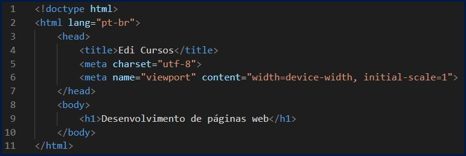
Temos a estrutura básica de um documento HTML e na linha 9 temos o título da página dentro do elemento h1.
Veja abaixo o resultado desse código no navegador.
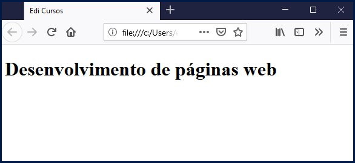
O nome do elemento referente ao título é h1, para ficar mais simples de entender vamos usar o CSS dentro da tag style no mesmo arquivo HTML, o elemento style é adicionado no head da nossa página, então nosso código CSS ficaria da forma em anexo.
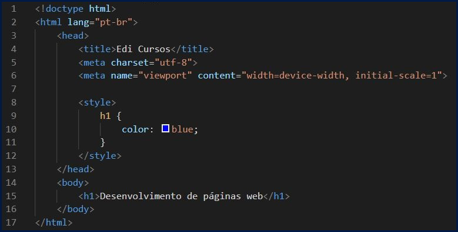
Na linha 8 adicionamos o elemento style, dentro dele escrevemos o código CSS da página.
Na linha 9 colocamos o identificador do elemento, nesse caso o seu próprio nome que é h1. Depois usamos o caractere “{“ para indicar o início do bloco de declarações.
Na linha seguinte temos a declaração que altera a cor do texto com a propriedade color, após os dois pontos indicamos que seu valor será blue, assim a cor do texto ficará azul e para finalizar a declaração colocamos ponto e vírgula.
Por fim, na linha 11 fechamos o bloco de declarações com o caractere “}”. O resultado no navegador será este:
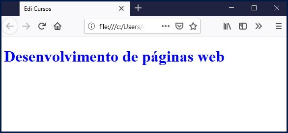
Todos os elementos do HTML tem algumas propriedades, entre elas temos o id, ele é utilizado para identificar cada componente dentro de uma página.
No exemplo anterior usamos o elemento h1 para aplicar o estilo CSS, no entanto se houvesse mais de um elemento h1 na mesma página todos iriam receber o mesmo estilo de cor.
Para diferenciar um elemento de outro podemos usar a propriedade id, pois o mesmo id não pode ser repetido na mesma página, então com ele conseguimos identificar cada componente de forma única. Veja o código abaixo onde usamos a propriedade id nos elementos h1.
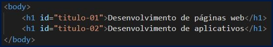
Note que no exemplo acima o primeiro h1 tem o id “tituto-01” e o segundo tem o id “titulo-02”. O resultado desse código no navegador será este abaixo.
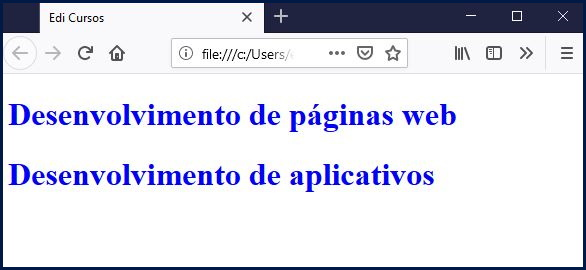
Agora nosso objetivo é deixar apenas o primeiro título com a cor azul, sabemos que o id dele é “titulo-01”. Veja a seguir como ficaria nosso código CSS usando o id do elemento como seletor.
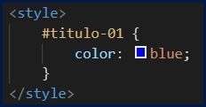
A única alteração foi no seletor onde passamos a empregar o id do componente que é “titulo-01” no lugar do nome h1, perceba que quando usamos o id como seletor devemos adicionar o caractere “#” no início. Veja seguir como ficou o resultado no navegador.
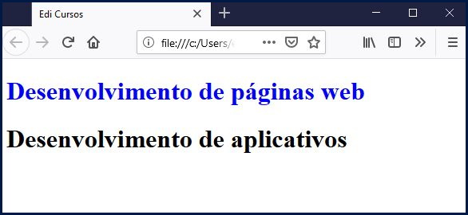
Como podemos perceber nosso objetivo foi alcançado, pois o estilo CSS foi aplicado apenas ao título com o id “titulo-01”.
Vamos ver agora quando podemos utilizar as classes como seletores do CSS, para isso adicionei mais um h1 em nossa página, veja abaixo como está nosso código HTML.
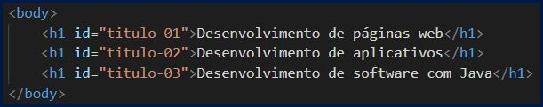
Nosso objetivo é deixar o segundo e o terceiro título na cor vermelha. Vimos que usando o nome do elemento h1 não vai dar certo pois com o nome iríamos alterar a cor de todos os títulos, e não é isso que desejamos.
Utilizando o id também não seria legal pois teríamos que colocar dois ids no seletor e se futuramente adicionar mais um título que deve ser vermelho vamos precisar lembrar de colocar o id dele no nosso CSS também.
Nessa situação é indicado usar as classes, para informar a classe de um elemento usamos o atributo class. Veja a seguir como ficou nosso código com as classes.
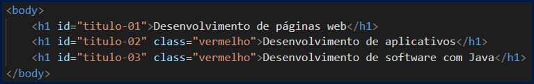
Perceba que o segundo e o terceiro h1 tem a propriedade class com o valor “vermelho”, note que a mesma classe pode ser usada por vários elementos, diferente do id que deve ser usado apenas uma vez em cada página.
Note em seguida como ficaria o código CSS usando a classe como seletor.
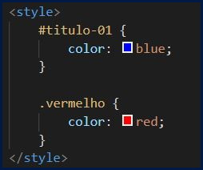
Criamos mais um bloco de código CSS usando a classe “vermelho” como seletor. Na primeira linha do bloco colocamos o nome da classe, e perceba que antes do nome da classe colocamos um ponto, pois sempre que usamos classes devemos usar um ponto antes de seu nome.
Também alteramos a cor do texto com a declaração da segunda linha do bloco CSS, onde colocamos o valor “red” na propriedade “color”. Veja a seguir o resultado do nosso código.
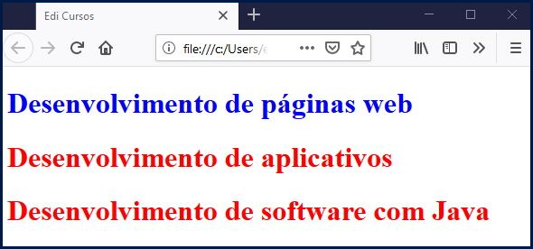
Agora em todo texto que você deseja que fique vermelho basta adicionar a propriedade class do elemento e usar a classe chamada “vermelho”.
Nessa aula começamos a estudar o CSS que é a linguagem usada para aplicar estilos em nossas páginas.
Também vimos como utilizar seletores para identificar quais componentes do HTML desejamos alterar.
Caso você tenha ficado com dúvidas ou tenha alguma sugestão mande sua pergunta ou envie uma mensagem para nós, responderemos o mais rápido possível.
Na próxima aula vamos aplicar estilos na página do site que estamos desenvolvendo.
W3SCHOOLS. CSS Introdução. W3SCHOOLS.COM, 2019. Disponível em: https://www.w3schools.com/css/css_intro.asp. Acesso em 20 de janeiro de 2020.
W3SCHOOLS. CSS Syntax. W3SCHOOLS.COM, 2019. Disponível em: https://www.w3schools.com/css/css_syntax.asp. Acesso em 03 de fevereiro de 2020.
W3SCHOOLS. CSS Seletores. W3SCHOOLS.COM, 2019. Disponível em: https://www.w3schools.com/css/css_selectors.asp. Acesso em 03 de fevereiro de 2020.